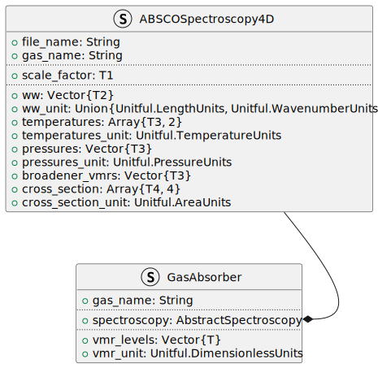

Arguably, one of the most fundamental quantities in a retrieval algorithm is the gas spectroscopy. Spectroscopy characterizes the absorption of light due to the various gas species for a given spectral interval and atmospheric conditions (mostly temperature and pressure).
As a reminder, we often want to calculate the optical depth due to gas absorption, and thus need to evaluate expressions such as this:
\tau(\lambda) \approx \int_{p_1}^{p_2} k(\lambda, p) \; N_{\mathrm{dry}} \; \mathrm{d}p,
where p_1 and p_2 are two pressure values, usually the boundaries of some pressure layer, N_{\mathrm{dry}} is the total number of dry air molecules. k is the absorption cross section for some gas, here written as a function of both wavelength \lambda and pressure p.
Goal of this tutorial
In this tutorial, we want to introduce new users of RetrievalToolbox to become familiar with the general usage of the toolkit. Prior experience with the Julia language is helpful, but not required. In the same manner, understanding the background of gas spectroscopy and its role in trace gas retrievals is also helpful.
2 Reading ABSCO Tables
In many retrieval applications, algorithms make use of pre-calculated absorption cross sections, since they can generally be efficiently and accurately evaluated at arbitrary coordinates given the pre-evaluated points via some interpolation scheme. Using pre-calculated tables reduces some of the computational effort at the cost of memory, as now a large table of pre-computed values has to be loaded up-front.
In this tutorial, we make use of so-called ABSCO files which contain these pre-calculated gas cross sections. These files can be on the order of a few hundred MB, depending on the desired spectral coverage. Here we use a small table file, with restricted spectral coverage, to demonstrate how they are used within RE.
We can start by reading in the full table file located in data/o2_spectroscopy_demo.h5.
# Some set-up for this documentusingRetrievalToolbox;const RE = RetrievalToolbox;usingPlots; default(fontfamily="Helvetica")usingUnitful;# Load the ABSCO tableabsco_o2 = RE.load_ABSCO_spectroscopy(joinpath("data", "o2_spectroscopy_demo.h5") )
[ Info: Loading XRTM from /Users/psomkuti/Work/xrtm_fork/interfaces
The function load_ABSCO_spectroscopy takes a single mandatory function argument, which is the path to the data file, and loads the contents of the table into a ABSCOSpectroscopy4D object. The object itself prints out some noteworthy information, such as the path to the underlying data file along with the number of levels for each of the axes. In our example case, we have a 4-dimensional table, meaning that this data file contains pre-computed gas absorption cross sections for four axes: spectral, temperature, pressure and water vapor broadener. RetrievalToolbox also has support for ABSCO tables that do not contain a broadener dimension.
Note
In this example, the underlying spectral axis is automatically converted to wavelength, however the underlying spectral information is given in wavenumbers.
With the object available in memory, we can now easily interrogate some of the contents. For example, if we would like see what the data points along the broadener dimension are, we can type the following.
absco_o2.broadener_vmrs
3-element Vector{Float32}:
0.0
0.03
0.06
This shows us that the broadener dimension (water vapor volume mixing ratio in this case) contains three points, and those grid points (points at which the gas cross sections were pre-calculated) are printed. In Julia, the fields of so-called parametric types are accessed with the dot-syntax, so one can generally type object.field to access some field that belongs to object. In the Julia console and other environments, such as Jupyter notebooks, one may type object. and press the TAB key to see a list of field names associated with object.
3 The ABSCO object
First, we will look at the ABSCO object more closely and understand how it relates to the equation at the beginning of this tutorial.
In order to obtain the gas absorption optical depth between two vertical levels in the atmosphere, denoted by pressures p_1 and p_2, we take into account how the gas cross section k varies with pressure. Notably, k also depends on the temperature as well, along with the aformentioned water vapor mixing ratio. k really is k(\lambda,p,T,\mathrm{H}_2\mathrm{O}).
The variable absco_o2 is of type ABSCOSpectroscopy4D, and its documentation can be accessed in a Julia console simply by typing ?RE.ABSCOSpectroscopy4D:
Type to hold a full 4D ABSCO spectroscopy table, with absorption coefficients as a function of a broadener gas (H2O usually), pressure, temperature, and wavelength.
file_name::String: Filename/path of the underlying ABSCO data
gas_name::String: Name of the gas whose cross sections this object represents
scale_factor::Real: User-defined factor that was used to scale the entire table
ww::Vector{T2} where T2<:Real: Spectral axis (wavelength or wavenumber)
ww_unit::Union{Unitful.Units{U, 𝐋} where U, Unitful.Units{U, 𝐋⁻¹} where U}: Unit belonging to spectral axis (length or wavenumber unit)
temperatures::Matrix{T3} where T3<:Real: Temperature axis (2-dimensional)
temperatures_unit::Unitful.Units{U, 𝚯, nothing} where U: Temperature unit
pressures::Vector{T3} where T3<:Real: Pressure axis (1-dimensional)
pressures_unit::Unitful.Units{U, 𝐌 𝐋⁻¹ 𝐓⁻²} where U: Pressure unit
broadener_vmrs::Vector{T3} where T3<:Real: Broadener volume mixing ratio (unit 1)
cross_section::AbstractArray{T4, 4} where T4<:Real: Cross section array, order: λ (or ν), H2O, T, p
cross_section_unit::Unitful.Units{U, 𝐋²} where U: Cross section unit (usually cm^2/molecule)
Note that within a typical ABSCO data file, the wavenumber array is (generally) an H5 double type, and all other arrays are likely 32 bit floats. However, we want to be as general as possible, so we use four different types T1 through T4 to allow for any mixture of number types for the axes.
The above documentation of the type ABSCOSpectroscopy4D lists the so-called type fields that are attached to absco_o2. It also conveniently lists the respective type of each type field. This is useful information if users want to instantiate an ABSCO object manually, without using the convience function load_ABSCO_spectroscopy.
The first item, file_name simply refers to the underlying ABSCO data path, mostly for bookkeeping so that it can always be known wich file was used to construct a particular ABSCO object. Its type is simply String. Similarly, a string-type gas_name field is required, it can be used to note the name of the gas whose cross section data this object is describing.
scale_factor is an overall factor that is applied to the cross section data during read-in, such that the values stored in the ABSCO object are a multiple of the original data. Note that this value is mostly informative, none of the calculation routines later on use this value. With the convienience function, a desired scale factor can be specified. For example, we could have written:
This is a good opportunity to mention some aspects about array slicing in Julia, which might behave differently from what users are familiar with in other programming languages. Users highly familiar with Julia can skip this section and move on to Section 3.2.
Tip
Reminder! Julia, by default, uses 1-based indexing for enumerations or vectors, arrays, and lists.
At first glance, array slicing is very similar to that of Numpy Python library, of Fortran array operations. If some array A is declared, then using the colon : allows to slice through one or more axes. To illustrate, we can define a matrix A, which we set to have four rows and 3 columns:
And we can see that Julia produces the expected object - note that Matrix is a Julia short-hand type for an Array with 2 dimenions. Accessing all elements of the second column, for example is done like this:
A[:,2]
4-element Vector{Float64}:
2.0
5.0
8.0
11.0
Or getting all elements of the third row is done like so, with the expected result:
A[3,:]
3-element Vector{Float64}:
7.0
8.0
9.0
Bounds-checking is enabled by default, so attempting to access an out-of-bounds index usually results in an appropriate error:
Julia’s memory layout for multi-dimensional arrays is column-major, meaning that elements that are in the same column are located next to each other. Iterating over arrays is thus generally faster over rows first, then columns. Iterating over a 3-dimensional array M[i,j,k] should be done ideally such that the outer-most traverses index i, and the inner-most one loops over k. Real-world performance might not always benefit from re-arranging arrays to be in optimal order, so benchmarking is always encouraged.
Moving on, we can peform more advanced slicing in both dimensions, such as taking every second row from the last two columns of A:
A[1:2:end,2:3]
2×2 Matrix{Float64}:
2.0 3.0
8.0 9.0
Above we used the slicing notation start:interval:stop, and end can conveniently be used in Julia to access the last element of some list, vector or array.
A performance-crucial aspect of array slicing is the fact that accessing arrays in this particular way generally creates a copy that is now a new object. This is a tricky concept, because depending on the statement, the slicing operation behaves in the expected manner. For example, if we want to slice the first row of array A, set those elements to some value, and inspect A again, we see that A has indeed changed.
If the slicing operation appears on the left-hand side of an equation, Julia will treat this as instruction to set those elements of A to the values of the right-hand side. This is not true when the slicing operation appears on the right-hand side of an expression like the one below:
B = A[1,:] # A new copy is createdB[:] .=0# We set all elements of B to 0println("B = ", B) # B should be zeroprintln("A[1,:] = ", A[1,:]) # The first row of A should still be -5
B = [0.0, 0.0, 0.0]
A[1,:] = [-5.0, -5.0, -5.0]
In the first line, A[1,:] indeed creates a new copy of the sub-array (a vector in this case), and is then assigned to the variable with name B. Upon changing B, A remains unaffected.
Often, we do not necessarily want to create new copy, but have a convenient way of accessing a sub-section of an array via a new symbol. Julia provides the @views macro to do just that. The Julia documentation provides more details, but for now it is enough to know that adding @views to an expression (such as on the right-hand side of an assigment via =) instructs Julia to use views of explicit array operations, rather than producing new copies. Related to the example above, we can simply modify the first line and obtain the result we initially wanted.
B =@views A[1,:] # B is a view upon the first row of AB[:] .=0# Set B to zero, and thus the first row of A alsoprintln("B = ", B) # B is zeroprintln("A[1,:] = ", A[1,:]) # The first row of A is now also zero
B = [0.0, 0.0, 0.0]
A[1,:] = [0.0, 0.0, 0.0]
Being aware of this behavior is crucial to making functions in Julia highly performant.
Warning
Explicit array slicing in expressions, of either full (e.g. [:,:,:]) or partial subsets (e.g. [1:3,:,5:10]) of arrays via the bracket-column notation, will likely spawn new copies of arrays and result in dramatic performance loss as well as unnecessary memory usage and garbage collector strain.
3.2 ABSCO object dimensions
The four axes of the absorption cross sections are accessed via absco_o2.temperature, absco_o2.pressure, absco_o2.broadener_vmrs and absco_o2.wavelength.
Note
The spectral dimension, be it either wavenumber or wavelength, is generally accessed in a special way (more on that in a differentn tutorial). For now, it is sufficient to know that the spectral dimension axis can be accessed with absco_o2.wavelength or absco_o2.ww, both methods are equivalent and return the spectral axis in wavelength units.
Finally, the absorption cross section data is easily accessed via absco_o2.cross_section, and should be indexed in the order that is stated in the in-line comment of the type. ABSCO tables, as provided by NASA JPL, are tabulated in a non-uniform manner, so we will first explore the data a little bit.
The wavelength and broadener VMR axes are straightforward. As we have seen before, this particular data table was pre-computed for three different H2O VMRs:
absco_o2.broadener_vmrs
3-element Vector{Float32}:
0.0
0.03
0.06
So accessing all pre-computed cross sections for all available wavelengths, temperatures and pressures, for a fixed water vapor VMR of 0.03 can be done via (lengthy output is suppressed here via the semi-colon at the end of the expression):
idx_h2o =2absco_o2.cross_section[:,idx_h2o,:,:];
The pressure dimension corresponds to the last index. For the sake of simplicity, we can check the size of the pressure dimension via
size(absco_o2.pressures)
(64,)
and then simply opt to pick out the 60th element, which corresponds to the following pressure value.
idx_p =60absco_o2.pressures[idx_p]
97267.98f0
Note that the ABSCO object also carries a pressures_unit field, which tells us in which units the corresponding pressure values are stored in:
absco_o2.pressures_unit
Pa
Note
Units play a big role in RetrievalToolbox, however working with units will be discussed in a later tutorial. For now, we just make note of the fact the pressure axis contains values in units of Pascal.
Just like before, we could inspect all cross sections for a broadener VMR of 0.03 that were also calculated for the specific pressure value shown above:
The temperature axis handles differently than the other three axes. Since these gas absorption cross sections were computed for applications in Earth’s atmosphere, there is an innate relationship between temperature and pressure. In order to make the storage of these cross sections more efficient, the temperature axis was chosen to be two-dimensional: for each pressure grid point, the temperature axis is different.
Below, we illustrate this two-dimensional temperature axis (Figure 1). The next piece of code plots a line connecting all temperature grid points for each distinct pressure grid point. The first vertical line near 1.0 Pa, colored in blue, spans a temperature range between ~115 K through ~280 K. The next temperature range, valid for the pressure grid point of ~45 Pa spans a different range between ~175 K through ~335 K. The pressure grid itself is not uniform, and absorption cross sections are sampled much more densely in pressure space when entering the tropospheric pressure regime of a few thousand Pascals.
For example, if we want to obtain the cross sections for a given point in the atmosphere, we must first pick our pressure grid point. For the sake of simplicity, we can just assume that this pressure corresponds exactly to the third pressure grid point at
println("p = $(absco_o2.pressures[3]) Pa")
p = 252.48628 Pa
This means we have to look at the third vertical line from the left in Figure 1 (blue) and move to the grid point on that line which corresponds to the temperature of our chosen point in the atmosphere. The temperatures corresponding to that particular pressure grid point are easily found via typing
Again, assuming a convenient case in which the temperature we are looking for falls exactly onto a grid point, for example the 10th temperature value, we can thus obtain all cross section values belonging to this (p,T)-pair like so:
absco_o2.cross_section[:, :, 10, 3];# Output surpressed here
Here it is important to realize that this 2-dimensional pressure grid has consequences for traversing the ABSCO table when moving to a neighbouring point. For example, we have selected now 10 for the temperature index, and 3 for the pressure index. If we move to the next available pressure grid point at index 4, the temperatue value implicitly changes! This can be easily verified by comparing the two temperatue values at
absco_o2.temperatures[10, 3]
261.43738f0
and
absco_o2.temperatures[10, 4]
240.6375f0
This makes usage of the ABSCO table data slightly more cumbersome in practice, however users generally do not have to worry much about this underlying structure. The sampling of these tables is handled by lower-lying functions of RetrievalToolbox which most users do not have to call themselves.
Lastly, we can look at the spectral dependence of the cross sections. In addition to the temperature-pressure pair we already picked before [10,3] we select the first value in the water vapor broadener axis (equal to a H2O VMR of 0.0). The only remaining axis is the spectral axis equal to the first dimension.
Since this is a small subset of the full ABSCO table originally devised to cover the full oxygen A-band, we only see two major oxygen absorption lines.
We can further zoom into towards the first of the two major absorption lines, and sample the cross section table at different pressure grid points (and implicitly therefore also different temperature grid point values). We see in Figure 3 that the cross section for this absorption line becomes shallower but also wider with increasing pressure due to Doppler broadening.
plot()for p in [4, 20, 50]plot!( absco_o2.λ, absco_o2.cross_section[:,1,10,p], markershape=:circle, markersize=2, label="p = $(absco_o2.pressures[p]) Pa", legend_position=:topleft, xlabel="Wavelength [µm]", ylabel="Cross section [cm²/molecule]", yticks=[0, 1e-22, 2.0e-22] )endxlims!(0.76461, 0.76465)# Needed to display the resulting plot since we used `plot!` inside a loopcurrent()
Figure 3: ABSCO spectral axis
4 The gas object
In the previous section, we explored ABSCO objects in RetrievalToolbox, which in our example was an object of type ABSCOSpectroscopy4D. Those objects, or more generally speaking, an object of a type that belongs to the super-type AbstractSpectroscopy, represent something very tangible in the greater scheme of a trace gas algorithm, namely the underlying gas spectroscopy which we ultimately require to compute optical properties that feed into the calculation of a spectrum.
By itself, these spectroscopy objects do not achieve much, and within RetrievalToolbox, we want to attach them to a gas object, called GasAbsorber:
GasAbsorber
Gas absorber type. Requires an associated spectroscopy object along with pressure levels and the corresponding volume mixing ratios on each of those levels.
gas_name::String: Name of the gas
spectroscopy::AbstractSpectroscopy: Spectroscopy object that contains the cross sections for this gas
vmr_levels::Vector: VMR level profile
vmr_unit::Unitful.Units{U, NoDims} where U: VMR units
We can see in the fields of GasAbsorber, that it requires an AbstractSpectroscopy object.

Figure 4: Relationship between GasAbsorber and the underlying spectroscopy. Note that the placeholders T1, T2, T3 and T4 can be any combination of real-valued numbers. See the RetrievalToolbox documentation for more details.
Many provided types in RetrievalToolbox have similar relationships and dependencies as shown in Figure 4, as they very naturally follow the conceptual hierarchies that are inherent in the many calculations that are performed in a typical retrieval problem.
Conceptually, the idea behind this formulation is simple: in the end we want to be able to describe a gaseous absorber in our model atmosphere, that gas must have a name and a volume mixing ratio profile associated with it. But in order to compute spectra, we must also attach some spectroscopic information which will be called up when the optical properties are computed.
It is much more straightforward to instantiate a new object of type GasAbsorber, so a convience function is not provided. We can create the object manually, so to speak. In Julia, a new object of a user-type, a parametric type, is simply created by calling the new type with appropriate parameters corresponding to the field types, in correct order. For example, we can think of a new type MyType that only contains two numbers, such as
struct MyType a::Float64 # A 64-bit float number b::Int # A 64-bit integer numberendnew_obj =MyType(5.0, 10) # Create the new type with a=5.0 and b=10
MyType(5.0, 10)
The instantiation will fail if the types of the parameters are not correct, or in a wrong order:
new_obj =MyType([10,9,8], 5.0)
MethodError: Cannot `convert` an object of type Vector{Int64} to an object of type Float64
The function `convert` exists, but no method is defined for this combination of argument types.
Closest candidates are:
convert(::Type{Float64}, ::Measures.AbsoluteLength)
@Measures~/.julia/packages/Measures/PKOxJ/src/length.jl:12
convert(::Type{T}, ::VectorizationBase.AbstractSIMD) where T<:Union{Bool, Float16, Float32, Float64, Int16, Int32, Int64, Int8, UInt16, UInt32, UInt64, UInt8, SIMDTypes.Bit}
@VectorizationBase~/.julia/packages/VectorizationBase/G9NJI/src/base_defs.jl:201
convert(::Type{T}, ::Quantity) where T<:Real
@Unitful~/.julia/packages/Unitful/GMTL8/src/conversion.jl:167
...
Stacktrace:
[1] MyType(a::Vector{Int64}, b::Float64) @Main./In[31]:2
[2] top-level scope
@In[32]:1
In the example above, the instantiation of a new object fails because MyType requires the first field a to be of type Float64, and field b of type Int (short-hand for 64-bit integer), but we passed a vector of 64-bit integers (Vector{Int}) which cannot be implicitly converted to the expected types.
Note that implicit conversions happen, when possible! Doing the following, for example, does not raise an error, due to the fact that 10 can be converted to a Float64, and 5.0 can be converted into an Int without meaningful loss of precision:
new_obj =MyType(10, 5.0)
MyType(10.0, 5)
Of course trying to instantiate this new object with the second parameter being 5.1 instead of 5.0 now raises an error because 5.1 cannot be converted into an integer.
Moving on with our gas object, we first have to give it a name - "O2" seems like a sensible choice as it compactly describes the molecular oxygen gas for which we happen to posses the spectroscopic tables for.
gas_name ="O2"
"O2"
Moving on, we must also generate a vector that represents the volume mixing ratio profile on pressure levels. Note that in a full algorithm built with RetrievalToolbox, the profile must of course be of the same length as the retrieval pressure grid. In abscence of those other parts, we can simple create a 4-level vector with repeated entries like so:
Now we understand 0.2095 to be the volume mixing ratio in units of 1, but we must explicitly specify that to the gas object. Again, we must specify the units here, which is best done by specifying Unitful.NoUnits, which is equal to having a quantity of unit 1. Note that GasAbsorberrequires a compatible dimensionless unit descriptor, so omitting the unit information is not allowed.
Gas absorber: O2
Associated spectroscopy: data/o2_spectroscopy_demo.h5
We have now successfully instantated a new GasAbsorber object, and called it gas_o2. And as before, we can access the associated fields of our object via the dot-syntax, so we can recall the name of the gas by typing
gas_o2.gas_name
"O2"
We supplied the spectroscopy object of the first section of this tutorial, named absco_o2 to this new GasAbsorber object named gas_o2. And we can freely access it in the expected manner. Dot-syntax can be chained, so we can display the pressure grid points of the spectroscopy object via accessing it from the gas object.
It is crucial to understand that when instantiating a new object of a user-type using pre-created objects, we are merely passing a reference! Unless explicitly done so, the objects (such as gas_name, absco_o2 or vmr_levels) that are now part of the newly created gas_o2, are the exact same ones!
The above reminder is of immense importance when working with RetrievalToolbox! To elaborate on the point, let us remind ourselves that we first created several objects, such as the vector vmr_levels, or before that absco_o2. When we called GasAbsorber(..) to instantiate a new object of the GasAbsorber type, those objects remain in memory, and no new copies were made. What this means, in turn, is that when modifying those objects, they will appear to be modified when accessing them via gas_o2.
For example, the gas VMR profile was initially created to have repeated values of 0.2095. At this point, we can confirm that be displaying their values:
Now, the entries of this vector are not protected in any way, so we are free to simply modify them.
vmr_levels[2] =0.15
0.15
Since the gas_o2 object stores only a reference to the vmr_levels vector, we will see that when we try to display the gas VMR levels of gas_o2, the values have changed!
In fact, we can ask Julia whether the two objects are the same with the === operator. This operator confirms that vmr_levels, created beforehand, and gas_o2.vmr_levels are, as far as Julia is concerned, indistinguishable from each other!
vmr_levels === gas_o2.vmr_levels
true
This is fully expected behavior and also rather convenient in terms of performance. Spectroscopy tables, for examples, can be rather big and occupy a significant amount of space in memory. Once loaded, however, instantiating a new GasAbsorber object using an already existing ABSCOSpectroscopy4D object does not use significant memory.
We can actually see this by observing how much memory Julia has to allocate when producing a new GasAbsorber object:
The output from the statement above tells us that creating this new object is practically free in terms of memory usage, since none of the parameters have to be newly created during this process.
When building algorithms with RetrievalToolbox, users must make sure that objects (mostly vectors and arrays), that are used to construct other objects, are not unintentionally modified!
5 Summary and review
In this tutorial, we covered the basic concept of instantiating a new object via the example of a very fundamental building block of gas retrievals: spectroscopy. We have loaded a spectroscopy file using a convenience function, load_ABSCO_spectroscopy, which automatically reads the file contents of an ABSCO table file and returns the newly created ABSCOSpectroscopy4D object. We learned how to interrogate this particular spectroscopy object as well as slice through the multi-dimensional cross section table. Objects in RetrievalToolbox can have relationships, as is the case for objects of the GasAbsorber type, which themselves require some spectroscopy object to create them. We successfully created a new GasAbsorber object by using the spectroscopy object we created earlier, and learned that there is generally no computational overhead in creating a new object when all its parameters have already been created!